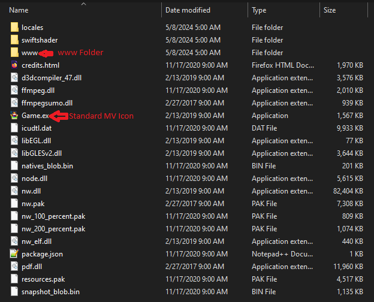
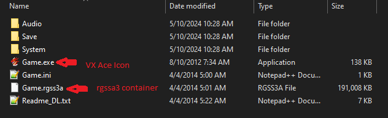

SLR Translator identifies the RPG Maker engine of a game automatically. Detection runs the moment you select the game in the project wizard — see Your First Translation Project for the surrounding flow. The result appears in the read-only Detected engine / type field of the RPG Maker XP, VX, Ace, MV & MZ Parser slide.
The tool checks the folder of the selected file for engine-specific markers, in a fixed order. The first marker that matches decides the engine:
| Engine | Code | Marker |
|---|---|---|
| RPG Maker MV | rmmv | A js/rpg_core.js file, directly in the game folder or under its www folder |
| RPG Maker MZ | rmmz | A js/rmmz_core.js file, directly in the game folder or under its www folder |
| RPG Maker VX Ace | rmvxace | Game.ini with Library set to an RGSS3 runtime |
| RPG Maker VX | rmvx | Game.ini with Library set to an RGSS2 runtime |
| RPG Maker XP | rmxp | Game.ini with Library set to an RGSS1 runtime |
| Enigma Virtual Box pack | enigma | An .exe containing the .enigma1 and .enigma2 sections in its executable header (checked last, only for executables) |
What the folder looks like for each family:

MV: the game data lives in JSON files inside the www folder.
MZ: lowercase data and js folders sit next to the executable.
nw (or Game) binary and a start.sh launcher instead of Game.exe. Select that launcher in the wizard and detection works the same way.
VX Ace: RGSS games keep their data in a Data folder — here packed into Game.rgss3a.

VX: same layout, with the archive named Game.rgss2a.
Select the game field — the detected type is shown immediately and drives the rest of the slide.The detected code selects the parser that handles the project:
data/. One parser covers both engines — see RPG Maker MV and RPG Maker MZ..rxdata, .rvdata, .rvdata2) and is converted with a bundled Ruby toolchain before and after translation — see the VX Ace, VX and XP pages.When no marker is found, the wizard reports that it is unable to detect the type of the selected path. There is no manual engine override — detection must succeed before Create project! is enabled. Check the usual causes:
index.html of an MV/MZ game, or the nw / Game / start.sh launcher of a Linux port.Game.ini must sit next to the executable and contain the Library entry naming the RGSS runtime..exe itself, not a shortcut.SEP for picture translation, Parse any file with custom parser for your own regex or JavaScript parsers (tabular files such as CSV included — see Custom Parsers & Model Creator).